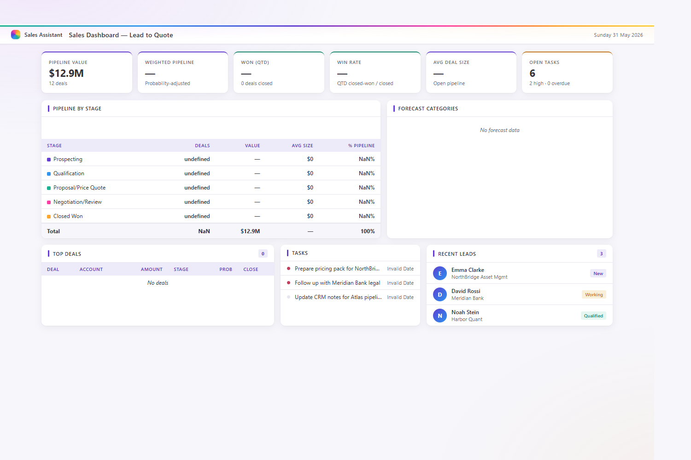
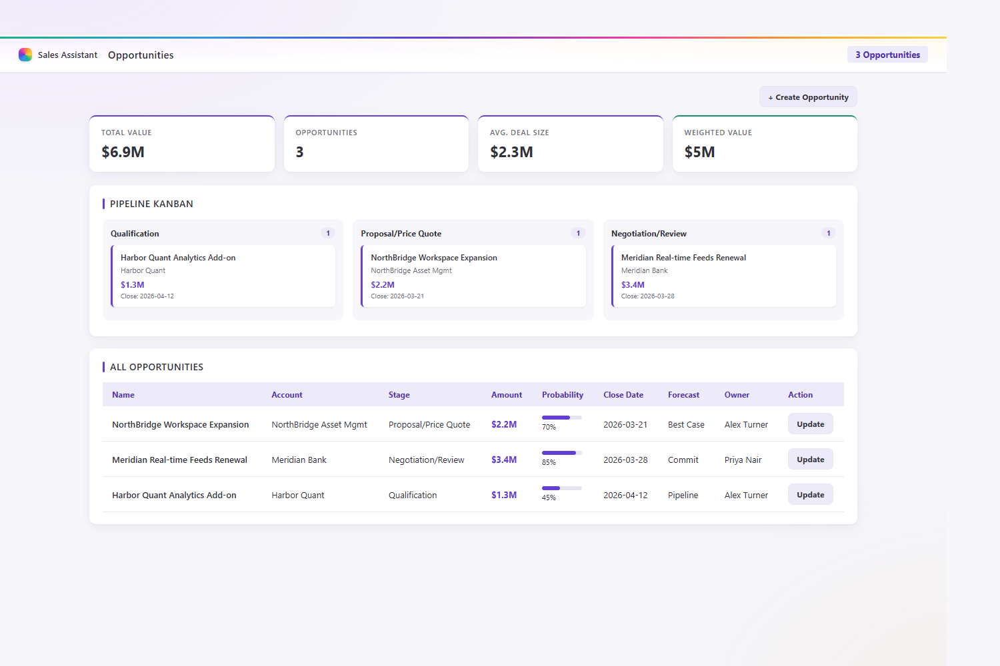
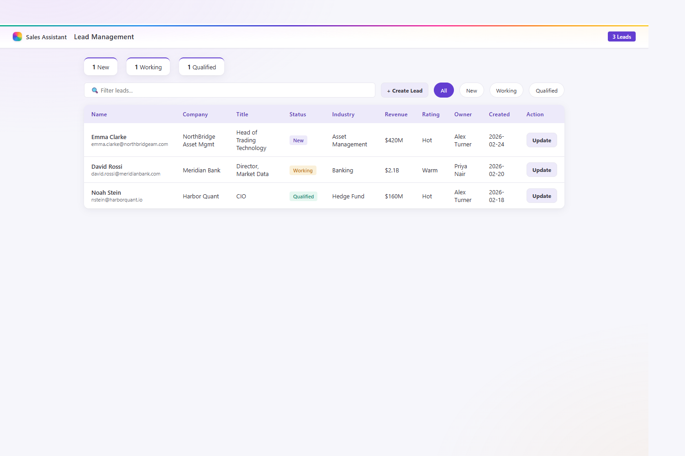
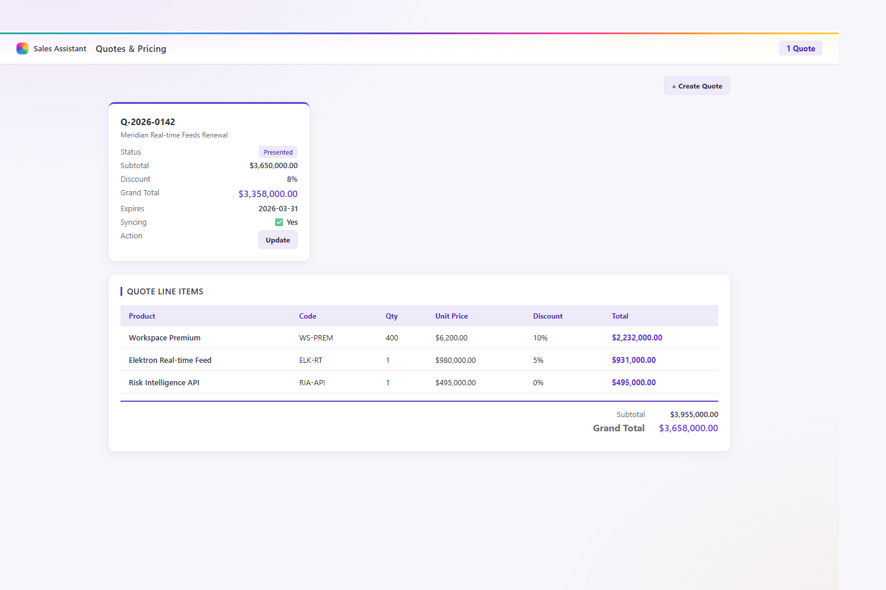
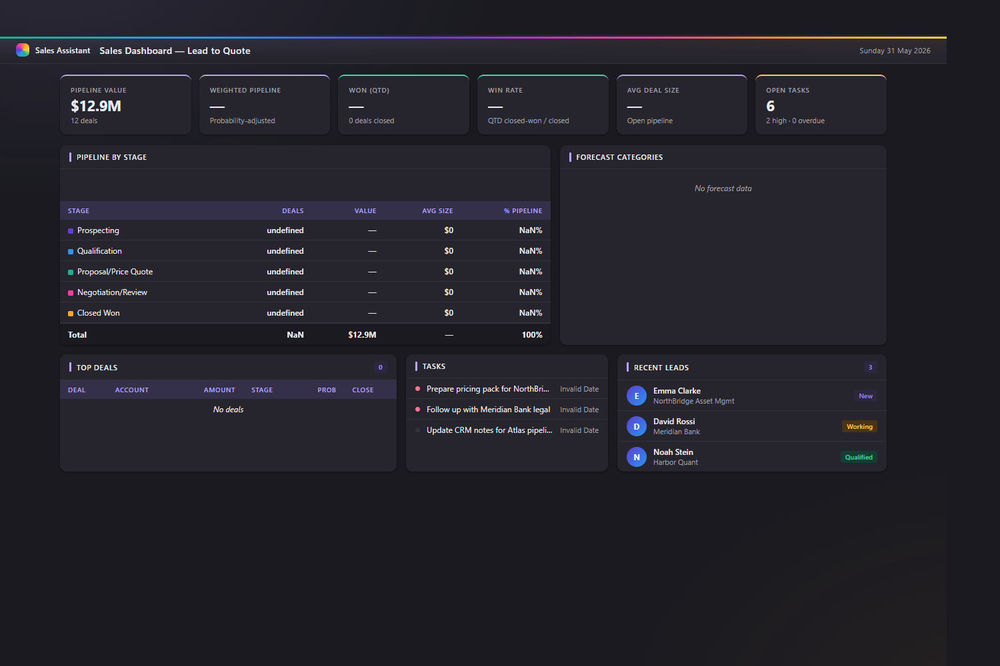

L2Q — Sales Assistant
An enterprise-grade Model Context Protocol server that gives fintech sales professionals a complete Lead-to-Quote workflow without ever leaving the flow of work. Built for professionals managing large, complex deals with financial-institution clients in a highly regulated environment — MiFID II, GDPR, FCA.
Two surfaces, one MCP server
L2Q powers both a fast chat surface and a deep co-work surface over the same live Salesforce pipeline.
Copilot Declarative Agent
Chat against your Salesforce pipeline with rich, branded HTML widgets — built with the M365 Agents Toolkit and the RemoteMCP plugin. The fast surface for lookups and quick actions.
Copilot Cowork plugin
Five co-work skills — research briefs, follow-up automation, pitch decks, meeting scheduling, pipeline review packs — that turn Salesforce signals into finished email, Word, PowerPoint and Excel artifacts.
Enterprise-ready auth
Switchable Client Credentials, OAuth Bearer pass-through, or Microsoft Entra SSO — the caller's Entra JWT is validated then forwarded to Salesforce. No secrets in the widget layer.
Built for regulated deals
MiFID II / GDPR / FCA compliance flags and deal-desk approval tracking are first-class tools — because complex fintech deals live and die on governance.
The Copilot widget surface
Widgets carry the Microsoft 365 Copilot look — a light surface, the signature rainbow accent bar, Segoe UI typography — and adapt automatically to light, dark and high-contrast themes.







Architecture
A single FastMCP / Streamable HTTP server hosted on Azure Container Apps fronts the Salesforce REST API (SOQL) and references the M365 Tooling Servers for Teams, Outlook and Calendar. It's designed to pair with an external market-intelligence MCP for company, macro and headline context inside the same agent.
Most tools are read-only; create and update tools are draft-first and require explicit confirmation before anything is written back to Salesforce. Each tool returns narrative text with prompt suggestions and structured content for the HTML + Skybridge widgets.